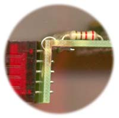

|
Display Adapter This board was developed to go with the Wavetable project, allowing easy displaying of the bank and wave numbers. It will also be used with my new sequencer when I eventually finish it. Unlike many displays, this one will show "1" through "8" instead of "0" through "7". I originally worked out this circuit for my old ETI based sequencer, as instead of driving individual LEDs, I had a numeric display. How to use this module: This module is designed to be connected to the Wavetable via the Wavetable's display connectors. It can also be hooked to anything else that has one or two three-bit addresses. A little on how it works: There are three distinct blocks to this circuit.
The little network of components before the 4511 form a simple adder, hard wired to add 1 to whatever binary number is presented to the input of the unit. The transistor and associated resistors are simply a discrete inverter. The array of signal diodes and associated resistor form two AND gates. The best way to understand the logic is to draw up a truth table follow through the circuit yourself - any explanation I could give would be long winded and confusing.
The schematic of the Display Adapter. There are two sections to the module, both identical, except for the IC pin numbers. The pin numbers of second section are in brackets.
ConstructionDepending on the voltage you plan to run the module from, the value of the LED resistors will need to be changed. When used in conjunction with the wavetable, the unit will be powered from 5V. These resistors will need to be 220R. For higher voltages, pick a resistor that will set the current flow through the LEDs at around 10 to 15 ma. Two examples are given on the circuit diagram. It would be acceptable to simply use 1k resistors for all voltages. The display would be dim when running from 5V, but remains readable in average room lighting.
The overlay of the Display Adapter. There are two boards that must be joined at right-angles. Before you start assembly, check the board for etching faults. Look for any shorts between tracks, or open circuits due to over etching. Take this opportunity to sand the edges of the board if needed, removing any splinters or rough edges. Make sure the two edges that must be joined together are clean and smooth. The routing on the boards I have in stock have a small lump on one corner that must be trimmed down. When you are happy with the printed circuit board, construction can proceed as normal, starting with the diodes and resistors first, followed by the IC sockets if used, then moving onto the taller components. Take particular care with the orientation of the polarized components such as the diodes, transistors and ICs. When inserting the ICs in their sockets, if used, take care not to accidentally bend any of the pins under the chip. Also, make sure the notch on the chip is aligned with the notch marked on the PCB overlay. Please note that the CMOS chips are static sensitive devices, so make sure you handle them correctly.
The two boards joined at right-angles.
 The sub-board that contains the two displays needs to be soldered at right angles to the main board. There are a series of large pads to assist with this. There are also a couple of small holes so a short length of tinned copper wire can be used to secure them together before you start soldering. The edge main board buts up against the bottom of the display board. Solder two short lengths of tinned copper wire between the corner holes on the main and display boards. These will help you position the two boards so the connections between them can be easilly soldered.
Notes:
Parts list This is a guide only. Parts needed will vary with individual constructor's needs. If anyone is interested in buying a set of these boards, please check the PCBs for Sale page to see if I have any in stock.
Can't find the parts? See the parts FAQ to see if I've already answered the question. Also see the CGS Synth discussion group.
Article, art & design copyright 2001 by Ken Stone
| ||||||||||||||||||||||||||||||